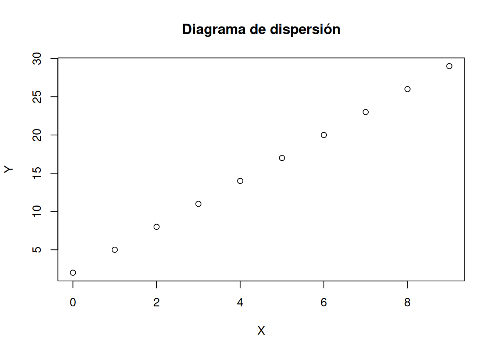
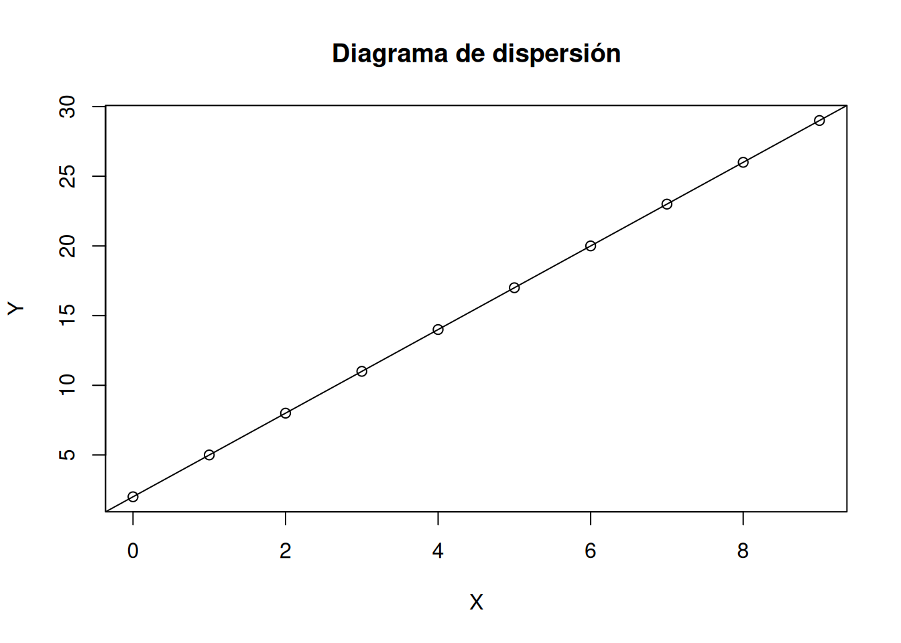
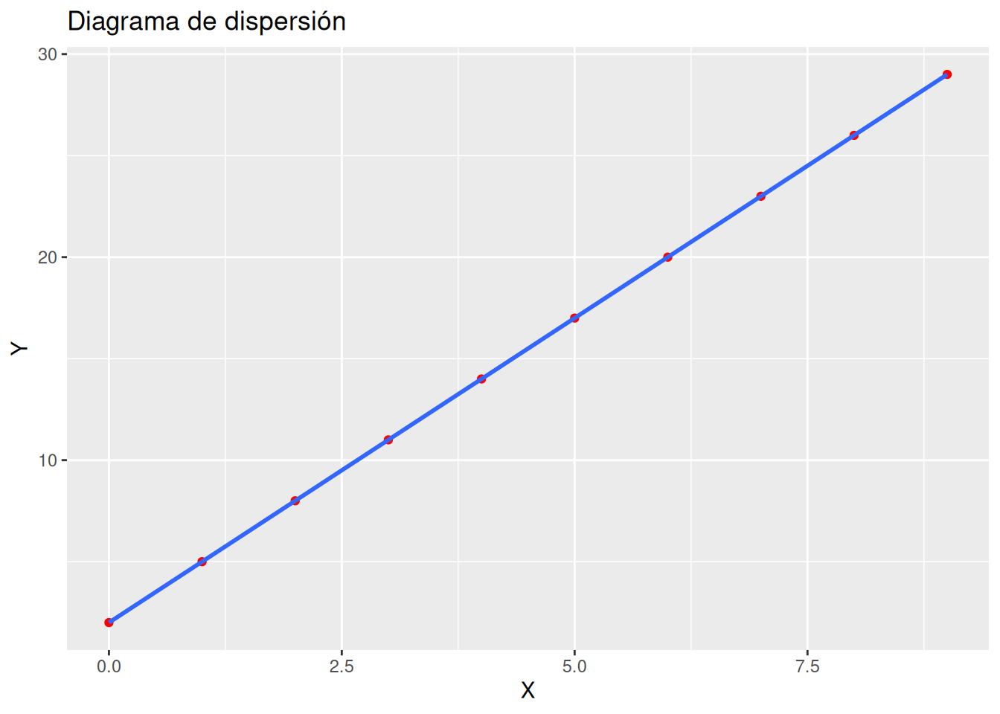
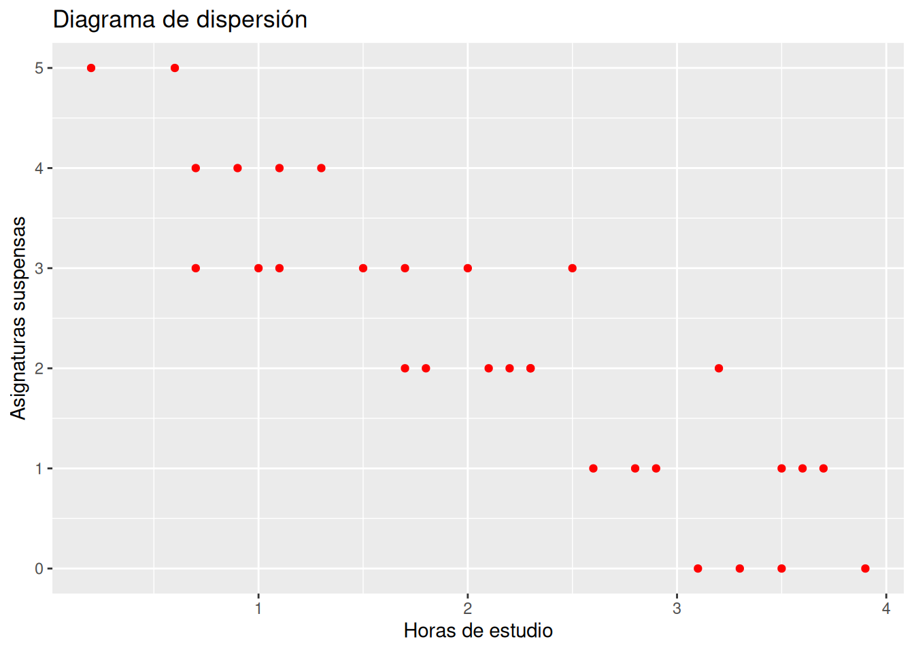
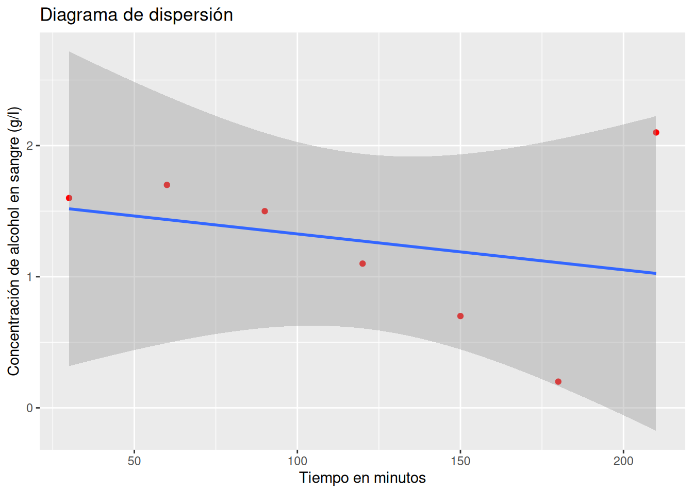
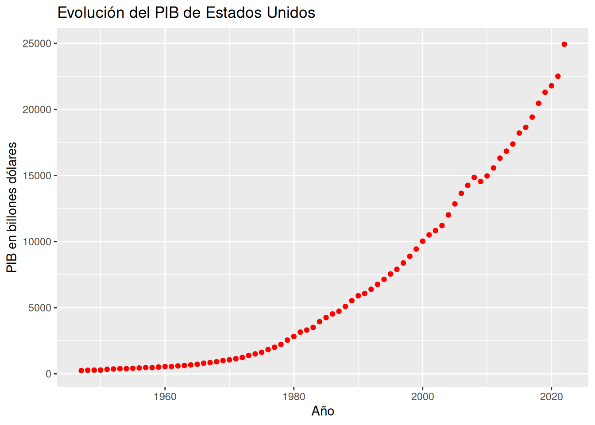
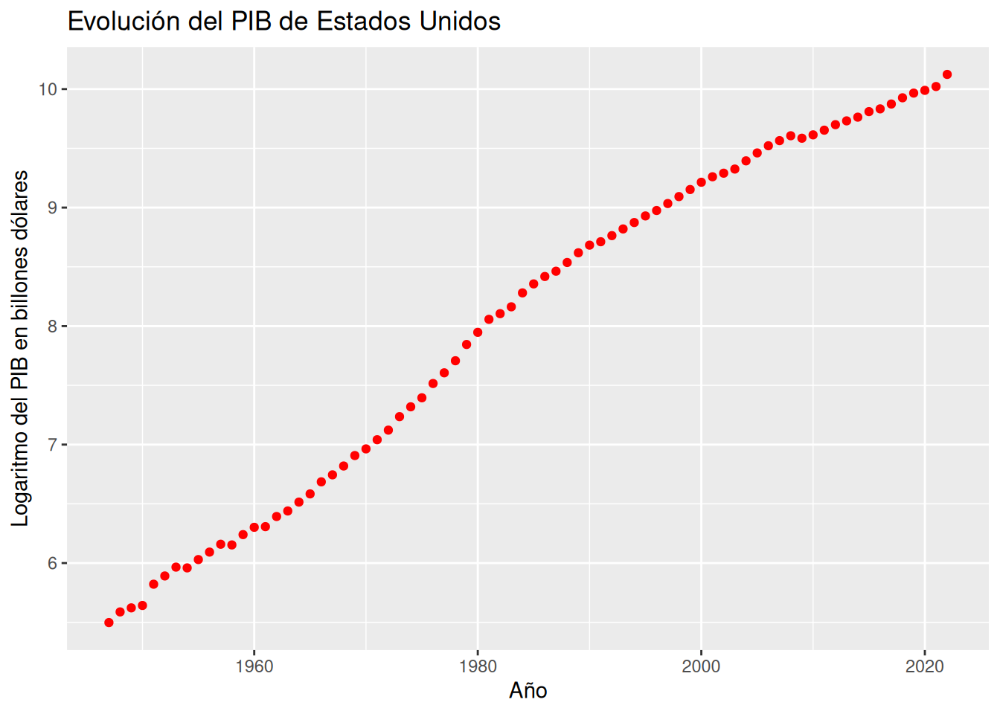
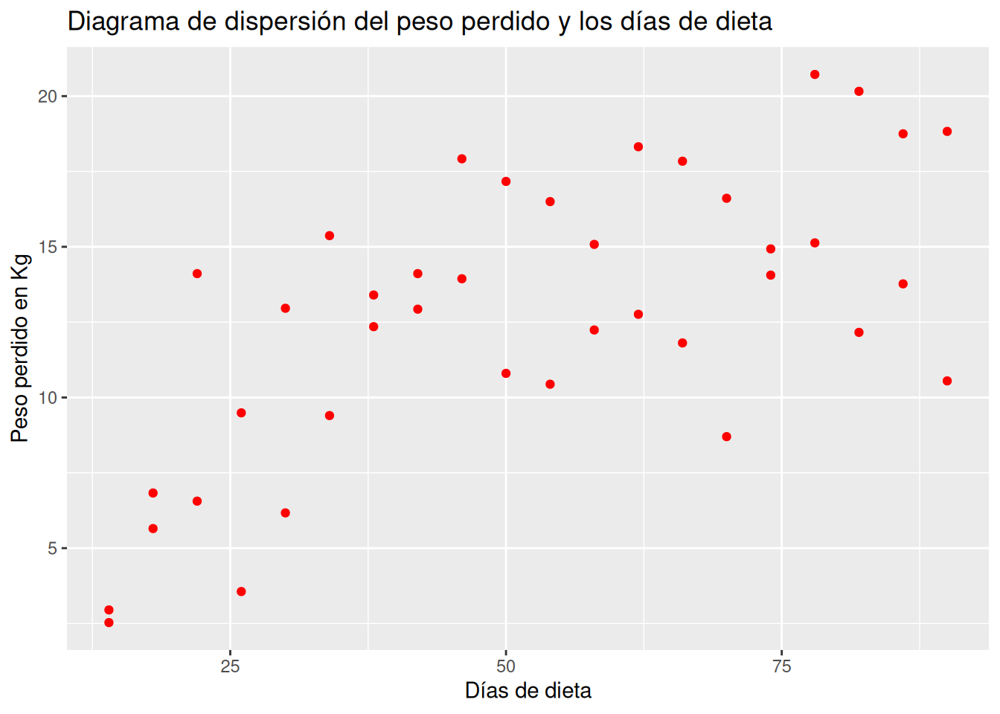
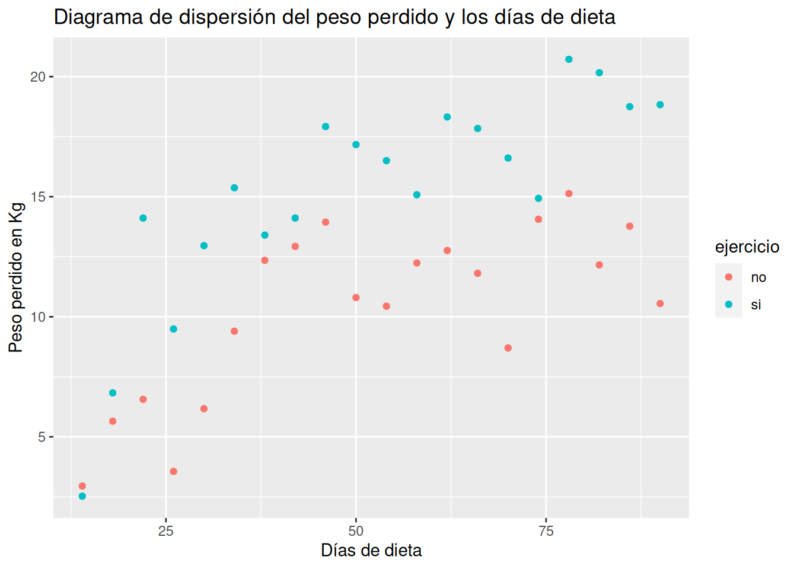

df <- data.frame(
x = c(0, 1, 2, 3, 4, 5, 6, 7, 8, 9),
y = c(2, 5, 8, 11, 14, 17, 20, 23, 26, 29)
)5 Regresión
5.1 Ejercicios Resueltos
Para la realización de esta práctica se requieren los siguientes paquetes:
library(tidyverse)
# Incluye los siguientes paquetes:
# - readr: para la lectura de ficheros csv.
# - dplyr: para el preprocesamiento y manipulación de datos.
library(vtable) # para resúmenes estadísticos.
library(skimr) # para resúmenes estadísticos.
library(summarytools) # para resúmenes estadísticos.
library(knitr) # para el formateo de tablas.
library(kableExtra) # para personalizar el formato de las tablas.También se necesita conocer las ecuaciones de los principales modelos de regresión, que se resumen en la siguiente tabla.
| Modelo | Ecuación general |
|---|---|
| Lineal | \(y=a+bx\) |
| Parabólico | \(y=a+bx+cx^2\) |
| Polinómico de grado \(n\) | \(y=a_0+a_1x+\cdots+a_nx^n\) |
| Potencial | \(y=ax^b\) |
| Exponencial | \(y=e^{a+bx}\) |
| Logarítmico | \(y=a+b\log x\) |
| Inverso | \(y=a+b/x\) |
| Curva S o Sigmoidal | \(y= e^{a+b/x}\) |
Ejercicio 5.1 Se han medido dos variables \(X\) e \(Y\) en 10 individuos obteniendo los siguientes resultados:
\[ \begin{array}{lrrrrrrrrrr} \hline X & 0 & 1 & 2 & 3 & 4 & 5 & 6 & 7 & 8 & 9 \\ Y & 2 & 5 & 8 & 11 & 14 & 17 & 20 & 23 & 26 & 29\\ \hline \end{array} \]
Crear un conjunto de datos con las variables
xey.SoluciónDibujar el diagrama de dispersión correspondiente. ¿Qué tipo de modelo de regresión se ajusta mejor a la nube de puntos?
Solución 1Para dibujar un diagrama de dispersión se puede usar la función
plotdel paquetegraphics.plot(df$x, df$y, xlab = "X", ylab = "Y", main = "Diagrama de dispersión")
Solución 2Otra alternativa es usar la función la función
geom_pointdel paqueteggplot2.library(ggplot2) ggplot(df, aes(x = x, y = y)) + geom_point(col = "red") + labs(title = "Diagrama de dispersión", x = "X", y = "Y")
El tipo de modelo que mejor se ajusta es lineal, ya que todos los puntos están alineados.
Calcular la recta de regresión de \(Y\) sobre \(X\).
SoluciónPara ajustar un modelo de regresión se utiliza la función
lmdel paquetestats. Esta función requiere que se le pase como parámetro la fórmula del modelo de regresión que debe tener la sintaxisy ~ f(x), dondeyes la variable dependiente en el modelo,xes la variable independiente, yf(x)es una expresión matemática que describe el modelo.recta_y_x <- lm(y ~ x, df) summary(recta_y_x)Warning in summary.lm(recta_y_x): essentially perfect fit: summary may be unreliableCall: lm(formula = y ~ x, data = df) Residuals: Min 1Q Median 3Q Max -3.675e-15 -8.783e-16 5.168e-16 9.646e-16 1.944e-15 Coefficients: Estimate Std. Error t value Pr(>|t|) (Intercept) 2.000e+00 1.049e-15 1.906e+15 <2e-16 *** x 3.000e+00 1.965e-16 1.527e+16 <2e-16 *** --- Signif. codes: 0 '***' 0.001 '**' 0.01 '*' 0.05 '.' 0.1 ' ' 1 Residual standard error: 1.785e-15 on 8 degrees of freedom Multiple R-squared: 1, Adjusted R-squared: 1 F-statistic: 2.33e+32 on 1 and 8 DF, p-value: < 2.2e-16La recta de regresión de \(Y\) sobre \(X\) es \(y = 2 + 3 x\).
Obtener el coeficiente de regresión de la recta anterior e interpretarlo.
SoluciónEl coeficiente de regresión es la pendiente de la recta de regresión
cat(paste("Coeficiente de regresión de Y sobre X:", recta_y_x$coefficients[["x"]]))Coeficiente de regresión de Y sobre X: 3El coeficiente de regresión de \(Y\) sobre \(X\) vale 3, lo que indica que \(Y\) aumenta 3 unidades por cada unidad que aumenta \(X\).
Dibujar la recta de regresión de \(Y\) sobre \(X\) sobre el diagrama de dispersión. ¿Cómo son los residuos del modelo de regresión?
Solución 1Para dibujar la recta de regresión se puede usar la función
ablinedel paquetegraphics.plot(df$x, df$y, xlab = "X", ylab = "Y", main = "Diagrama de dispersión") abline(recta_y_x)
Solución 2Otra alternativa es usar la geometría de ajuste de regresión por mínimos cuadrados
geom_smoothdel paqueteggplot2.library(ggplot2) ggplot(df, aes(x = x, y = y)) + geom_point(col = "red") + geom_smooth(method = "lm") + labs(title = "Diagrama de dispersión", x = "X", y = "Y")`geom_smooth()` using formula = 'y ~ x'
Como la recta pasa por todos los puntos del diagrama de dispersión, los residuos son nulos.
Calcular el coeficiente de determinación del modelo lineal e interpretarlo.
Solucióncat(paste("Coeficiente de determinación lineal R²:", summary(recta_y_x)$r.squared))Warning in summary.lm(recta_y_x): essentially perfect fit: summary may be unreliableCoeficiente de determinación lineal R²: 1Como el coeficiente de determinación lineal vale 1, el ajuste de la recta de regresión es perfecto.
Calcular la recta de regresión de \(X\) sobre \(Y\). ¿Coincide con la recta de regresión de \(Y\) sobre \(X\)?
Soluciónrecta_x_y <- lm(x ~ y, df) summary(recta_x_y)Warning in summary.lm(recta_x_y): essentially perfect fit: summary may be unreliableCall: lm(formula = x ~ y, data = df) Residuals: Min 1Q Median 3Q Max -1.435e-15 -5.090e-16 -2.062e-17 3.798e-16 1.943e-15 Coefficients: Estimate Std. Error t value Pr(>|t|) (Intercept) -6.667e-01 6.179e-16 -1.079e+15 <2e-16 *** y 3.333e-01 3.484e-17 9.567e+15 <2e-16 *** --- Signif. codes: 0 '***' 0.001 '**' 0.01 '*' 0.05 '.' 0.1 ' ' 1 Residual standard error: 9.494e-16 on 8 degrees of freedom Multiple R-squared: 1, Adjusted R-squared: 1 F-statistic: 9.153e+31 on 1 and 8 DF, p-value: < 2.2e-16La recta de regresión de \(X\) sobre \(Y\) es \(x = -0.6666667 + 0.3333333 x\), que es la misma que la recta de \(Y\) sobre \(X\), ya que el ajuste es perfecto, y tanto los residuos en \(Y\) como los residuos en \(X\) valen cero para esta recta.
Ejercicio 5.2 El fichero horas-estudio.csv contiene información sobre las horas de estudio diarias de una muestra de alumnos de ingeniería, y el número de asignaturas suspendidas al final del curso.
Crear un data frame con los datos de las horas de estudio y los suspensos a partir del fichero
horas-estudio.csv.Soluciónlibrary(readr) df <- read_csv("datos/horas-estudio.csv")Rows: 30 Columns: 2 ── Column specification ──────────────────────────────────────────────────────── Delimiter: "," dbl (2): Horas, Suspensos ℹ Use `spec()` to retrieve the full column specification for this data. ℹ Specify the column types or set `show_col_types = FALSE` to quiet this message.df# A tibble: 30 × 2 Horas Suspensos <dbl> <dbl> 1 3.5 1 2 0.6 5 3 2.8 1 4 2.5 3 5 2.6 1 6 3.9 0 7 1.5 3 8 0.7 3 9 3.6 1 10 3.7 1 # ℹ 20 more rowsDibujar el diagrama de dispersión correspondiente. ¿Qué tipo de modelo de regresión se ajusta mejor a la nube de puntos?
Soluciónlibrary(ggplot2) ggplot(df, aes(x = Horas, y = Suspensos)) + geom_point(col = "red") + labs(title = "Diagrama de dispersión", x = "Horas de estudio", y = "Asignaturas suspensas")
El tipo de modelo que mejor se ajusta es lineal, ya que hay una tendencia lineal en la nube de puntos y además es inversa.
Calcular la recta de regresión de los suspensos sobre las horas de estudio.
Soluciónrecta_suspensos_horas <- lm(Suspensos ~ Horas, df) summary(recta_suspensos_horas)Call: lm(formula = Suspensos ~ Horas, data = df) Residuals: Min 1Q Median 3Q Max -1.03614 -0.53214 -0.02013 0.49187 1.22587 Coefficients: Estimate Std. Error t value Pr(>|t|) (Intercept) 4.8491 0.2622 18.49 < 2e-16 *** Horas -1.2300 0.1106 -11.12 8.7e-12 *** --- Signif. codes: 0 '***' 0.001 '**' 0.01 '*' 0.05 '.' 0.1 ' ' 1 Residual standard error: 0.6359 on 28 degrees of freedom Multiple R-squared: 0.8155, Adjusted R-squared: 0.8089 F-statistic: 123.8 on 1 and 28 DF, p-value: 8.7e-12La recta de regresión de los suspensos sobre las horas es \(\textsf{suspensos}= 4.8491273 + -1.2299972 \textsf{horas}\).
Obtener el coeficiente de regresión de la recta anterior e interpretarlo.
Solucióncat(paste("Coeficiente de regresión de Suspensos sobre Horas:", recta_suspensos_horas$coefficients[["Horas"]]))Coeficiente de regresión de Suspensos sobre Horas: -1.22999717844331El coeficiente de regresión de los suspensos sobre las horas de estudio vale -1.2299972, lo que indica que por cada hora de estudio se obtendrán 1.2299972 suspensos menos al final del curso.
Dibujar la recta de regresión sobre el diagrama de dispersión. ¿El ajuste es mejor o peor que el del ejercicio anterior?
Soluciónlibrary(ggplot2) ggplot(df, aes(x = Horas, y = Suspensos)) + geom_point(col = "red") + geom_smooth(method = "lm") + labs(title = "Diagrama de dispersión", x = "Horas de estudio", y = "Asignaturas suspensas")`geom_smooth()` using formula = 'y ~ x'
En este caso el ajuste no es perfecto, ya que es imposible que la recta pase por todos los puntos como ocurría en el ejercicio anterior. Por tanto, el ajuste es peor.
Calcular el coeficiente de determinación del modelo lineal e interpretarlo.
Solucióncat(paste("Coeficiente de determinación lineal R²:", summary(recta_suspensos_horas)$r.squared))Coeficiente de determinación lineal R²: 0.81549948723949Como el coeficiente de determinación lineal vale 0.8154995 que está bastante próximo a 1, el ajuste es bueno, y el modelo puede utilizarse con fines predictivos.
Utilizar la recta de regresión para predecir el número de suspensos correspondiente a 3 horas de estudio diarias. ¿Es fiable esta predicción?
Soluciónpredict.lm(recta_suspensos_horas, newdata = list(Horas = 3))1 1.159136La predicción será fiable ya que el coeficiente de determinación está próximo a 1 y el tamaño de la muestra no es muy pequeño.
Según el modelo lineal, ¿cuántas horas diarias tendrá que estudiar como mínimo un alumno si quiere aprobarlo todo?
SoluciónComo ahora queremos predecir el número de horas de estudio, necesitamos calcular la recta de regresión de la horas sobre los suspensos.
recta_horas_suspensos <- lm(Horas ~ Suspensos, df) predict.lm(recta_horas_suspensos, newdata = list(Suspensos = 0))1 3.607387
Ejercicio 5.3 Después de tomar un litro de vino se ha medido la concentración de alcohol en la sangre en distintos instantes, obteniendo los siguientes datos
\[ \begin{array}{lrrrrrrr} \hline \mbox{Tiempo después (minutos)} & 30 & 60 & 90 & 120 & 150 & 180 & 210\\ \mbox{Alcohol (gramos/litro)} & 1.6 & 1.7 & 1.5 & 1.1 & 0.7 & 0.2 & 2.1\\ \hline \end{array} \]
Crear un data frame con los datos del tiempo y la concentración de alcohol.
Solucióndf <- data.frame( Tiempo = c(30, 60, 90, 120, 150, 180, 210), Alcohol = c(1.6, 1.7, 1.5, 1.1, 0.7, 0.2, 2.1) ) dfTiempo Alcohol 1 30 1.6 2 60 1.7 3 90 1.5 4 120 1.1 5 150 0.7 6 180 0.2 7 210 2.1Calcular el coeficiente de correlación lineal. ¿Existe relación lineal entre la concentración de alcohol y el tiempo que pasa?
SoluciónPara calcular el coeficiente de correlación lineal de Pearson se puede utilar la función
cordel paquetestats.cor(df$Tiempo, df$Alcohol)[1] -0.2730367El valore del coeficiente de correlación lineal es muy bajo, por lo que aparentemente no hay relación lineal entre la concentración de alcohol en sangre y el tiempo que pasa.
Dibujar el diagrama de dispersión correspondiente y la recta de regresión de la concentración de alcohol sobre el tiempo. ¿Por qué el ajuste es tan malo?
Soluciónlibrary(ggplot2) ggplot(df, aes(x = Tiempo, y = Alcohol)) + geom_point(col = "red") + geom_smooth(method = "lm") + labs(title = "Diagrama de dispersión", x = "Tiempo en minutos", y = "Concentración de alcohol en sangre (g/l)")`geom_smooth()` using formula = 'y ~ x'
El ajuste es malo porque hay un dato atípico que no sigue la misma tendencia que el resto.
Eliminar el dato atípico y calcular la recta de la concentración de alcohol sobre el tiempo. ¿Ha mejorado el modelo?
Solución# Eliminamos el dato atípico que está en la fila df <- df[-c(7), ] recta_alcohol_tiempo <- lm(Alcohol ~ Tiempo, df) summary(recta_alcohol_tiempo)Call: lm(formula = Alcohol ~ Tiempo, data = df) Residuals: 1 2 3 4 5 6 -0.27619 0.12095 0.21810 0.11524 0.01238 -0.19048 Coefficients: Estimate Std. Error t value Pr(>|t|) (Intercept) 2.173333 0.201927 10.763 0.000423 *** Tiempo -0.009905 0.001728 -5.731 0.004591 ** --- Signif. codes: 0 '***' 0.001 '**' 0.01 '*' 0.05 '.' 0.1 ' ' 1 Residual standard error: 0.2169 on 4 degrees of freedom Multiple R-squared: 0.8914, Adjusted R-squared: 0.8643 F-statistic: 32.84 on 1 and 4 DF, p-value: 0.004591La recta de regresión de la concentración de alcohol en sangre sobre el tiempo es \(\textsf{alcohol}= 2.1733333 + -0.0099048 \textsf{tiempo}\).
El modelo ha mejorado notablemente ya que ahora el coeficiente de determinación lineal \(R^2=0.8914286\), que está muy próximo a 1.
Según el modelo de regresión lineal, ¿a qué velocidad metaboliza esta persona el alcohol?
Solucióncat(paste("Coeficiente de regresión de la concentración de alchol sobre el tiempo:", recta_alcohol_tiempo$coefficients[["Tiempo"]]))Coeficiente de regresión de la concentración de alchol sobre el tiempo: -0.00990476190476191Así pues, la velocidad de metabolización del alcohol es 0.0099048 g/l\(\cdot\)min.
Si la concentración máxima de alcohol en la sangre que permite la ley para poder conducir es \(0.3\) g/l, ¿cuánto tiempo habrá que esperar después de tomarse un litro de vino para poder conducir sin infringir la ley? ¿Es fiable esta predicción?
SoluciónComo ahora queremos predecir el tiempo, necesitamos calcular la recta de regresión del tiempo sobre la concentración de alcohol.
recta_tiempo_alcohol <- lm(Tiempo ~ Alcohol, df) predict.lm(recta_tiempo_alcohol, newdata = list(Alcohol = 0.3))1 180Aunque el coeficiente de determinación lineal está próximo a 1, el tamaño muestral es demasiado pequeño para que la predicción sea fiable.
Ejercicio 5.4 El fichero pib-usa.csv contiene información sobre el producto interior bruto de Estados Unidos en billones de dólares americanos desde 1947 hasta 2022.
Crear un data frame con los datos del PIB y los años a partir del fichero
pib-usa.csv.Soluciónlibrary(readr) df <- read_csv("datos/pib-usa.csv")Rows: 76 Columns: 2 ── Column specification ──────────────────────────────────────────────────────── Delimiter: "," dbl (2): Año, PIB ℹ Use `spec()` to retrieve the full column specification for this data. ℹ Specify the column types or set `show_col_types = FALSE` to quiet this message.df# A tibble: 76 × 2 Año PIB <dbl> <dbl> 1 1947 244. 2 1948 267. 3 1949 276. 4 1950 282. 5 1951 338. 6 1952 362. 7 1953 390. 8 1954 387. 9 1955 415. 10 1956 443. # ℹ 66 more rowsDibujar el diagrama de dispersión que represente la evolución anual del PIB. ¿Qué tipo de modelo de regresión se ajusta mejor a la nube de puntos?
Soluciónlibrary(ggplot2) ggplot(df, aes(x = Año, y = PIB)) + geom_point(col = "red") + labs(title = "Evolución del PIB de Estados Unidos", x = "Año", y = "PIB en billones dólares")
A la vista de la forma de la nube de puntos parece que la evolución del PIB es exponencial.
Dibujar el diagrama de dispersión del logaritmo del PIB y los años.
Soluciónlibrary(dplyr)Attaching package: 'dplyr'The following objects are masked from 'package:stats': filter, lagThe following objects are masked from 'package:base': intersect, setdiff, setequal, uniondf <- mutate(df, logPIB = log(PIB)) ggplot(df, aes(x = Año, y = logPIB)) + geom_point(col = "red") + labs(title = "Evolución del PIB de Estados Unidos", x = "Año", y = "Logaritmo del PIB en billones dólares")
La nube de puntos tienen una clara forma lineal, lo que confirma que la evolución del PIB es exponencial.
Calcular el modelo de regresión exponencial del PIB sobre los años.
Soluciónrecta_logPIB_años <- lm(log(PIB) ~ Año, df) summary(recta_logPIB_años)Call: lm(formula = log(PIB) ~ Año, data = df) Residuals: Min 1Q Median 3Q Max -0.39115 -0.13495 -0.03532 0.17693 0.29436 Coefficients: Estimate Std. Error t value Pr(>|t|) (Intercept) -1.215e+02 1.951e+00 -62.27 <2e-16 *** Año 6.527e-02 9.832e-04 66.39 <2e-16 *** --- Signif. codes: 0 '***' 0.001 '**' 0.01 '*' 0.05 '.' 0.1 ' ' 1 Residual standard error: 0.188 on 74 degrees of freedom Multiple R-squared: 0.9835, Adjusted R-squared: 0.9833 F-statistic: 4407 on 1 and 74 DF, p-value: < 2.2e-16El modelo de regresión exponencial que mejor explica la evolución del PIB es \(\textsf{PIB}= e^{-121.4998223 + 0.065271 \textsf{Año}}\).
¿Cuál es la tasa de crecimiento porcentual anual del PIB?
Solucióncat(paste("Coeficiente de regresión del logaritmo del PIB sobre los años:", recta_logPIB_años$coefficients[["Año"]]))Coeficiente de regresión del logaritmo del PIB sobre los años: 0.0652710244896027El coeficiente de regresión de los suspensos sobre las horas de estudio vale 0.065271, lo que indica que la tasa de crecimiento anual del PIB es 6.5271024%.
Dibujar el modelo de regresión exponencial sobre el diagrama de dispersión.
Soluciónlibrary(ggplot2) ggplot(df, aes(x = Año, y = PIB)) + geom_point(col = "red") + geom_smooth(method="glm", method.args=list(family=gaussian(link="log")))`geom_smooth()` using formula = 'y ~ x'
labs(title = "Evolución del PIB de Estados Unidos", x = "Año", y = "Logaritmo del PIB en billones dólares")$x [1] "Año" $y [1] "Logaritmo del PIB en billones dólares" $title [1] "Evolución del PIB de Estados Unidos" attr(,"class") [1] "labels"En este caso el ajuste no es perfecto, ya que es imposible que la recta pase por todos los puntos como ocurría en el ejercicio anterior. Por tanto, el ajuste es peor.
¿Es el modelo de regresión exponencial un buen modelo para explicar la evolución del PIB?
Solucióncat(paste("Coeficiente de determinación exponencial R²:", summary(recta_logPIB_años)$r.squared))Coeficiente de determinación exponencial R²: 0.983487569858149Como el coeficiente de determinación lineal vale 0.9834876 que está bastante próximo a 1, el ajuste es bueno, y el modelo exponencial explica muy bien la evolución del PIB.
Utilizar el modelo de regresión exponencial para predecir el PIB del año 2024. ¿Es fiable esta predicción?
Soluciónexp(predict.lm(recta_logPIB_años, newdata = list(Año = 2024)))1 40486.8La predicción será fiable ya que el coeficiente de determinación está próximo a 1, el tamaño de la muestra no es muy pequeño y el año para el que se realiza la predicción no está lejos del rango de años de la muestra.
¿Cuándo se alcanzará un PIB de 50000 billones de dólares?
SoluciónComo ahora queremos predecir el año en el que se alcanzará el PIB dado, necesitamos construir el modelo de regresión de los años sobre el PIB. Como la relación entre el PIB y los años es exponencial, la relación entre los años y el PIB será la inversa, es decir, el modelo logarítmico.
log_años_PIB <- lm(Año ~ log(PIB), df) summary(log_años_PIB)Call: lm(formula = Año ~ log(PIB), data = df) Residuals: Min 1Q Median 3Q Max -4.4049 -2.5367 0.2662 1.7718 6.4965 Coefficients: Estimate Std. Error t value Pr(>|t|) (Intercept) 1863.498 1.852 1006.29 <2e-16 *** log(PIB) 15.068 0.227 66.39 <2e-16 *** --- Signif. codes: 0 '***' 0.001 '**' 0.01 '*' 0.05 '.' 0.1 ' ' 1 Residual standard error: 2.857 on 74 degrees of freedom Multiple R-squared: 0.9835, Adjusted R-squared: 0.9833 F-statistic: 4407 on 1 and 74 DF, p-value: < 2.2e-16El modelo de regresión logarítmico de los años sobre el PIB es \(\textsf{Año}= 1863.4980331 + 15.0677514 \log(\textsf{PIB})\).
predict.lm(log_años_PIB, newdata = list(PIB = 50000))1 2026.528
Ejercicio 5.5 El fichero dieta.csv contiene información sobre el los kilos perdidos con una dieta de adelgazamiento.
Crear un data frame con los datos de la dieta a partir del fichero
dieta.csv.Soluciónlibrary(readr) df <- read_csv("datos/dieta.csv")Rows: 40 Columns: 3 ── Column specification ──────────────────────────────────────────────────────── Delimiter: "," chr (1): ejercicio dbl (2): dias, peso.perdido ℹ Use `spec()` to retrieve the full column specification for this data. ℹ Specify the column types or set `show_col_types = FALSE` to quiet this message.df# A tibble: 40 × 3 dias peso.perdido ejercicio <dbl> <dbl> <chr> 1 14 2.95 no 2 18 5.65 no 3 22 6.56 no 4 26 3.56 no 5 30 6.17 no 6 34 9.4 no 7 38 12.4 no 8 42 12.9 no 9 46 13.9 no 10 50 10.8 no # ℹ 30 more rowsDibujar el diagrama de dispersión de los kilos perdidos en función del número de días con la dieta. ¿Qué tipo de modelo de regresión se ajusta mejor a la nube de puntos?
Soluciónlibrary(ggplot2) ggplot(df, aes(x = dias, y = peso.perdido)) + geom_point(col = "red") + labs(title = "Diagrama de dispersión del peso perdido y los días de dieta", x = "Días de dieta", y = "Peso perdido en Kg")
La nube de puntos es bastante difusa aunque parece apreciarse una tendencia logarítmica o sigmoidal.
Calcular el modelo de regresión sigmoidal del peso perdido sobre los días de dieta. ¿Es un buen modelo para explicar la relación entre el peso perdido y los días de dieta?
Soluciónsigmoidal_peso_dias <- lm(log(peso.perdido) ~ I(1/dias), df) summary(sigmoidal_peso_dias)Call: lm(formula = log(peso.perdido) ~ I(1/dias), data = df) Residuals: Min 1Q Median 3Q Max -0.83810 -0.17537 0.06906 0.17786 0.71841 Coefficients: Estimate Std. Error t value Pr(>|t|) (Intercept) 3.09446 0.08819 35.088 < 2e-16 *** I(1/dias) -25.65167 2.94543 -8.709 1.37e-10 *** --- Signif. codes: 0 '***' 0.001 '**' 0.01 '*' 0.05 '.' 0.1 ' ' 1 Residual standard error: 0.2952 on 38 degrees of freedom Multiple R-squared: 0.6662, Adjusted R-squared: 0.6574 F-statistic: 75.85 on 1 and 38 DF, p-value: 1.374e-10El modelo de regresión sigmoidal que mejor explica el peso perdido en función de los días de dieta es \(\textsf{Peso}= e^{3.0944614 -25.6516729 / \textsf{dias}}\).
Dibujar el diagrama de dispersión de los kilos perdidos en función del número de días con la dieta según si la persona hace ejercicio o no. ¿Qué conclusiones se pueden sacar?
Soluciónlibrary(ggplot2) ggplot(df, aes(x = dias, y = peso.perdido, color = ejercicio)) + geom_point() + labs(title = "Diagrama de dispersión del peso perdido y los días de dieta", x = "Días de dieta", y = "Peso perdido en Kg")
Claramente la nube de puntos de las personas que hacen ejercicio está por encima de la de los que no hacen ejercicio, lo que indica que hacer ejercicio favorece la pérdida de peso. Los más razonable es construir modelos de regresión para cada grupo.
Construir el modelo de regresión inverso del peso perdido sobre los días de dieta para los que hacen ejercicio y para los que no.
Soluciónlibrary(broom) library(kableExtra)Attaching package: 'kableExtra'The following object is masked from 'package:dplyr': group_rowsdf %>% nest_by(ejercicio) %>% mutate(mod = list(lm(peso.perdido ~ I(1/dias), data = data))) %>% summarize(tidy(mod)) %>% kable() %>% kable_styling()Warning: Returning more (or less) than 1 row per `summarise()` group was deprecated in dplyr 1.1.0. ℹ Please use `reframe()` instead. ℹ When switching from `summarise()` to `reframe()`, remember that `reframe()` always returns an ungrouped data frame and adjust accordingly.`summarise()` has grouped output by 'ejercicio'. You can override using the `.groups` argument.ejercicio term estimate std.error statistic p.value no (Intercept) 14.92508 0.8826746 16.908927 0.0e+00 no I(1/dias) -182.19025 29.4795388 -6.180227 7.8e-06 si (Intercept) 21.56554 0.7652517 28.180978 0.0e+00 si I(1/dias) -255.22492 25.5578527 -9.986164 0.0e+00 ¿Han mejorado los modelos con respecto al hacer la regresión por grupos?
Soluciónlibrary(broom) library(kableExtra) df %>% nest_by(ejercicio) %>% mutate(mod = list(lm(peso.perdido ~ I(1/dias), data = data))) %>% summarize(glance(mod)) %>% kable() %>% kable_styling()`summarise()` has grouped output by 'ejercicio'. You can override using the `.groups` argument.ejercicio r.squared adj.r.squared sigma statistic p.value df logLik AIC BIC deviance df.residual nobs no 0.6796880 0.6618929 2.089080 38.19521 7.8e-06 1 -42.05964 90.11928 93.10648 78.55660 18 20 si 0.8470993 0.8386048 1.811168 99.72348 0.0e+00 1 -39.20461 84.40921 87.39641 59.04594 18 20 El modelo de regresión ha mejorado bastante en el grupo de los que hacen ejercicio ya que el coeficiente de determinación ha aumentado bastante.